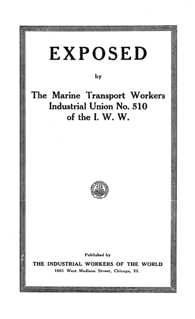
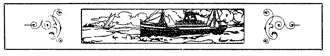
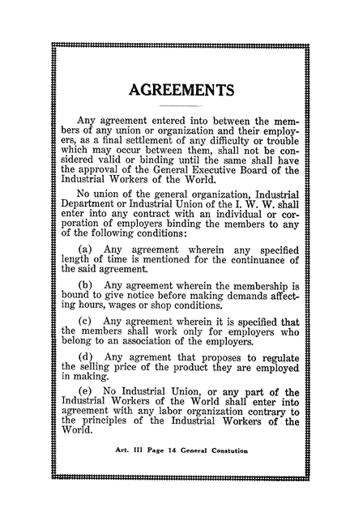
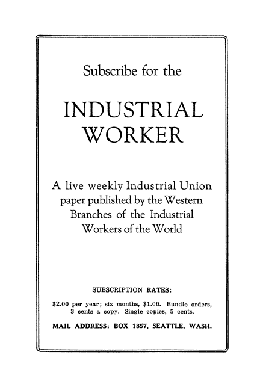
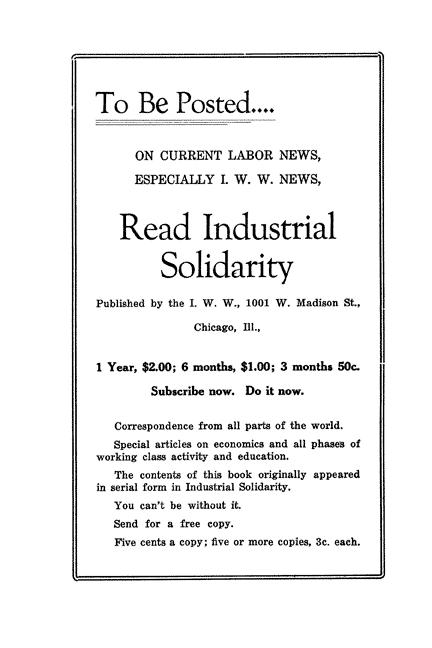
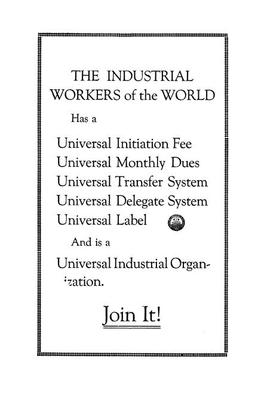

Exposed! - Marine Transport Workers Industrial Union of the I. W. W. Replies to Accusations Made Against It by Andrew Furuseth

EXPOSED
by
The Marine Transport Workers
Industrial Union No. 510
of the I. W. W.
Published by
THE INDUSTRIAL WORKERS OF THE WORLD
1001 West Madison Street, Chicago, 111.

Marine Transport Workers Industrial Union of the I. W. W. Replies to Accusations Made Against It by Andrew Furuseth
INTRODUCTION
When men, supposedly representing organized workers, stoop so low as to openly and deliberately work with, and aid, police officials in an attempt to have workingmen sent to prison because they disagree on a form of organization, we deem it our duty to make the facts known to the workers of the world.
Andrew Furuseth, President of the International Seamen's Union of America, boldly admits that he has asked police to arrest, and prosecuting attorneys to prosecute, members of the Marine Transport Workers' Industrial Union of the I. W. W.
His stated reasons are that the Marine Transport Workers' Industrial Union is an unpatriotic organization and is composed of deserters from Furuseth's own union, the I. S. U. of A.
Officials of the International Seamen's Union have aided and abetted Furuseth in his disgraceful efforts to send innocent workingmen to prison.
In the state of California, Furuseth worked passionately to have seamen sent to prison under the pretext that they had become liable under the "criminal syndicalist" law of that state.
His efforts were unavailing there so he went to the federal government at Washington. He pleaded with congressmen and senators to the end that a nation-wide raid might again be instituted against the whole I. W. W.
His labors came to naught.
Many unusual things happen in America. However, the actions of Furuseth are unparalleled in the labor history of this country. Friends of a lifetime have turned against him. He is discredited and ostracized.
THE MEANEST CRIME
Not only is Andrew Furuseth a self-confessed informer, but he has deliberately lied about, and slandered an organization of workers.
Failing in his attempts to have the members of the Marine Transport Workers' Industrial Union sent to prison, and to have the offices of the I. W. W. raided, he launched into a campaign of vilification against the organization.
Furuseth insinuated that the M. T. W. was paid by the shipowners to break the I. S. U. of A.
In a document published by the I. S. U. of A., December, 1921, and printed in the Congressional Record, February, 1922, Furuseth declares:
There are already quite a number of men who believe that the Wobblies are carried on the vessels by the shipowners for their own purposes; that they protect them not only on the vessels but in the courts as well. I do not charge that this is so, but it certainly looks like it. They are expelled and their names published in our official minutes, yet they keep sailing. They are arrested and are out on bail; their trials are delayed. We offer to point them out, but this offer is not accepted.
Furuseth has repeated the above insinuation in public addresses and to newspapers. He has not attempted to submit proof; he only says it "looks like it".
The most dastardly crime that a human being can stoop to commit is to attempt to ruin the character of a man or of an organization through insinuations.
Furuseth is not fit to be called a Judas; he is a slimy, crawling snake, weaving his way through the labor movement.
FURUSETH IN EUROPE
Organized in 1905, the I. W. W. has had a stormy career. During its seventeen years existence, it has borne the brunt of the workers' struggle for freedom. It has always played fair and square with the workers, not only of America but of the world.
The I. W. W. is hated by the masters. It has been charged with every conceivable crime—against the exploiters; but it has the wholesome respect of the working class. There was no one in America who could believe that the I. W. W. had been bought by any part of the master class. Furuseth's insinuations were ridiculous; too ridiculous for home consumption.
In June, 1922, Furuseth went to Europe, bent upon an international slandering tour. In Europe he changed his insinuations regarding the I. W. W. to direct accusations.
In Europe he deliberately charged the I. W. W. with being paid by shipowners and said that he had ample proofs.
The I. W. W. it seems, has a better reputation in Europe than Furuseth. Commenting upon Furuseth's charges, the Swedish syndicalist daily, "Arbetaren" of Stockholm, says, July 21, in an editorial:
In regard to the assertion of Mr. Furuseth, that the I. W. W. is bought by the American shipowners, they are, from all appearances, inspired by competitive jealousy, and no one who knows the I. W. W. in its history, believes them for a moment. In the interview mentioned, Furuseth has not presented even a semblance of proof for the correctness of his accusations, very likely because of lack of such proof, and under the circumstances, we can without hesitation label him as a liar, to whose words no sensible person pays any attention.
So much for Mr. Furuseth in Europe.
THE CHALLENGE
In a letter to J. Havelock Wilson, president of the National Sailors' and Firemen's Union of Great Britain and Ireland, dated October 13, 1921, Andrew Furuseth, president of the I. S. U. of A., declared :
In about 10 or 11 days from now I am leaving again for the Pacific, where I am going with the deliberate purpose of cleaning house, if I can, and that means expulsion of every man that either is an I. W. W., or an advocate of the I. W. W. doctrine. I have told the officials of the Marine Transport Workers' Industrial Union No. 510,. that between them and us there is a fight to death, with no quarter asked or given on either side so far as we are concerned.
THE SEAMEN'S JOURNAL
J. Vance Thompson joined the I. S. U. in 1909. He was, and is, a progressive craft unionist. He is honest and willing to face conditions as they are. He believed in a union controlled by the rank and file.
Thompson became editor of The Seamen's Journal, official organ of the Sailors' Union of the Pacific. Thompson conducted the Journal in the interest, and in accordance with the desires of a majority of the members who owned the Journal.
He is not now, and never has been, connected with the I. W. W. He believed that craft unions might grow into more efficient organizations of workers.
Thompson put his ideas into the Journal. He wanted a more compact organization and was willing to fight for it. He opposed Furuseth's obsolete policies. Thompson placed blame where blame belonged. He opened the columns of the Journal to the rank and file.
That was more than Furuseth could stand. He believed in rule from the top down. He didn't want advice from the seamen.
Furuseth soon got his machine in working order and Thompson was doomed.
FURUSETH EXPELS THOMPSON
At a regular business meeting of the Sailors' Union of the Pacific, Monday, November 24, 1921, Furuseth preferred charges against Thompson.
Thompson, in turn, preferred charges against Furuseth.
Furuseth charged that Thompson was not living up to the policy laid down by the Supreme Quorum, and that he was advocating the principles of the I. W. W.
Thompson charged that Furuseth was endeavoring to compel the seamen to accept the degrading terms laid down by the shipowners.
At a later meeting that had been pre-arranged and packed by Furuseth, Thompson was expelled. Walking toward the chair Thompson threw his membership-book upon the desk. He was followed by many other members who threw their books in Furuseth's face. Shaking with fear, Furuseth drew a revolver from his pocket; though he did not have courage enough to raise it above the desk. Twenty-five members, charged with advocating industrial unionism, were expelled at this meeting.
At this time the membership of the Sailors' Union of the Pacific was rapidly decreasing. The week's financial report showed an income of $721 and an expenditure of $1,500.
THE STAMPEDE
During the winter of 1921-22 hundreds of members of the I. S. U. of A. were expelled because they dared to criticise the high-handed actions of its officials: Thousands of members incensed at the expulsions threw up their membership cards in disgust. The exodus became a stampede and today only a skeleton is left of the once "proud" I. S. U. of A.
At the I. S. U. of A. convention, Chicago, January, 1922, Secretary-Treasurer Thomas A. Hanson reported that the I. S. U. had lost more than 75,000 members since 1919.
It is impossible to get the exact I. S. U. membership figures today, but industrial observers say that it is below 5,000.
THE SEAMEN'S ACT
To the American sailor, the Seamen's Act is a fraud and a delusion. It is estimated that more than two hundred thousand dollars of the seamen's money was used to put this act over. At the last convention of the I. S. U., Secretary-Treasurer Hanson pointed out that it had cost the International $40,000 to defend the Seamen's Act in the last four years.
Years of lobbying and large sums of the seamen's hard earned money have been spent for a legislative act that has not helped the seamen one iota.
Lo and behold, after the strike of 1921, the seamen found conditions confronting them worse than before the Seamen's Act had been declared a law.
Furuseth, unable to grasp the situation, when he found the members deserting the I. S. U., appealed to them in the name of the Seamen's Act, which he had created.
That was like waving red before a bull. The seamen resented it. Was an act of congress, that was ignored by every shipowner, all that Furuseth had to offer? Furuseth's boast of the Seamen's Act, in itself, is responsible for the bitterness against him displayed by thousands of American seamen.
Furuseth, like Frankenstein, had created a monster that inflicted dreadful retribution upon its creator.
WHO IS FURUSETH?
Furuseth is an old man. His idea of unionism is as old as himself. He is known as a conservative; he is a consistent reactionary.
For more than thirty years he has been connected with seamen's unions. He has grown old with the I. S. U. of A. He is unable to realize that conditions are not what they were thirty years ago.
He claims responsibility for the Seamen's Act. He boasts of it as the "crowning achievement of his glorious career."
100 PER CENT AMERICAN
Furuseth says of himself : "I am 100 per cent American." He is the personification of narrow American bigotry.
He hates "foreigners" and supports the movement—American seamen for American ships—to the utmost of his tottering power.
The war-hysteria that sent thousands of workers to prison, and hundreds more to death through patriotic mob-violence, still surges through the veins of Furuseth.
He has been branded as a "reactionary and a stool of the shipowners" by union men throughout the States. The men of his organization are leaving him because of that brand. Even the other leaders of the American Federation of Labor have turned against him, afraid to sanction his disgraceful tactics.
A GRAFTER
At the meeting of the Sailors' Union of the Pacific, Furuseth was openly charged with being a grafter by members of his own union.
He was making a martyr of himself—telling the seamen of his hardships, of the sacrifices he was making and all for $7.50 a day.
"The quarterly financial report of the International shows that Furuseth is receiving $87.50 a week and that's just $12.50 a day", said a member.
Unable to deny this Furuseth sought to cloud the issue by saying that he paid $5.00 a day for office expenses.
Consulting the report again, an item was found showing that $80 a month was provided for office expenses.
MORE GRAFT
Not only Furuseth but other officers of the I. S. U. of A. were charged with being crooked. The following figures taken from the quarterly report of the International cannot be denied or contradicted.
Victor Olander received $4,119 in 1919 for "legislature expenses," whatever that means.
Patrick Flynn received, while supposedly sick, $1,915 for the last quarter in 1920 and the first quarter in 1921. This great amount was outside of his regular salary.
Paul Sharrenberg received $1,530 for one month's work (?) regarding a "compensation bill."
Is it any wonder that officials of the I. S. U. of A. act like "poltroons of the dunghill" when they see their members joining the Marine Transport Workers' Industrial Union of the I. W. W.?
THE I. S. U. OF A.
The International Seamen's Union of America is a federation of seamen's craft unions and has never held an important place in the labor movement. It is the brain child of Furuseth.
Its struggle for existence has been marked by the usual craft union ups and downs, but always with more downs than ups.
During the war it rose to the height of its power. So did all other craft unions in this country. Due to increased marine transportation and the extreme shortage of labor, conditions of seamen greatly improved during the war.
However, it should be noted here that at no time were the conditions of seamen as good as were those of the land workers, even the unorganized land workers.
GOVERNMENT HELPED
The I. S. U. was petted and pampered by the government. Government officials actually urged seamen to join it and it was most natural they did.
Furuseth pranced about the country elated. He now represented craft unions with a combined membership of more than 100,000. Through no efforts of his, or the union, wages went up. Furuseth dreamed of an everlasting government-subsidized union. He made no plans for the future.
But all wars come to an end—likewise all foolish dreams.
THE DREAM ENDS
Immediately after the armistice Furuseth's dream came to an abrupt end. Even before the ink was dry on the armistice papers the war-bonus for seamen was suddenly cut off.
Furuseth had the "promise" of government officials that the war-bonus, given to seamen for braving the dangers of submarine-infested waters, would continue until the signature of peace.
CONDITIONS GROW BAD
Beginning in the late fall of 1918, things began to happen—to the seamen. During the winter the shipowners tightened up and by spring the seamen were generally dissatisfied.
Officials of the I. S. U. made no protest against the cutting off the war-bonus. When some of the rank and file began to complain they were told by the officials to shut up. They were "warned" that if the seamen made any kick, the Naval Reserve would man the ships and the merchantmen would die of starvation.
ATLANTIC COAST TIE-UP
This dragged along until the I. S. U. officials tried to force the seamen to accept a compromise they had made with the shipowners.
The firemen's branches on the Atlantic Coast rejected the agreement. This led to the Atlantic Coast tie-up of shipping in 1919.
The marine firemen demanded an increase of $15 for all except the lowest grades, who were to get $10, that is, grades that came within jurisdiction of their union.
The firemen were the most determined, and the strike, to a great extent, depended upon them. If they came out the sailors and stewards could not work; the ships would be tied up.
OFFICIALS AGAINST WAGE RAISE
The I. S. U. officials were against asking for a raise but were afraid of the firemen. They tried to persuade them in this manner:
We're with you, boys, but the time is not opportune. There is no branch of the international going to ask for a raise in wages at this critical period. The sailors are only putting in for a reduction in the working hours, and this is not a raise in wages. . . . If the conditions justified it we would be only too pleased to go with you.
The officials told the men that the government—through the Shipping Board—was the largest shipowner, and "we must not antagonize the government."
Furuseth said that if the firemen went out on strike without the aid of the international, the "strike would fail within three months". That was a threat of scabbery!
The strike came on the Atlantic Coast and with it a rush of the officials to get behind the men after they were out. The I. S. U. officials, at the last minute, put in a demand for a wage increase for sailors, after having bitterly opposed wage increases from the beginning.
The I. S. U. did not support the strike. There was friction between the East and the West Coasts. The officials encouraged this.
FLYNN KNIFES STRIKERS
A West Coast ship put into Norfolk about the middle of the strike and at a critical time. One of her crew, a member of the I. S. U., received the following telegram :
San Francisco, Cal., July 16, 1919.
James J. Farrell, care Western Union Telegraph Co.,
Newport News, Va.If local union delegate there wants you or rest of crew to leave ship there, ask him to pay you the wages you have earned in full, give transportation, subsistence and sleepers back here, and see that you get it before leaving ship. Don't accept any promises. Otherwise make trip according to articles signed here.
Patrick Flynn.
Patrick Flynn is First Vice-President of the I. S. U., for which he is paid $12.50 a day. He is also Secretary of the Pacific Firemen, and for this he is paid $55.00 a week more.
The telegram can only be understood when it is known that Flynn, Furuseth and the whole I. S. U. machine opposed the strike of the firemen on the Atlantic Coast.
More than half the crew of the West Coast ship left her at once and made no claim on the East Coast firemen's strike fund, as they were ordered by Flynn.
After the strike had been on for about eighteen days, the shipowners intimated to the Strike Committee that they were ready to give in about wages. The changes in working conditions were to be left to a committee of shipowners to confer with the union and reach a settlement.
STRIKERS BETRAYED
The Strike Committee immediately sent out the following telegram to all branches:
Conference with American Shipowners Association yesterday have agreed as follows: $15 increase for all unlicensed men in engine room outside of wipers and passers, who get $10. . . . Call special meeting at once, find out number of men in favor and those opposed as soon as possible. We consider this a great victory. The shipowners agree to give passes to all their docks to all union officials, also agree to pay money due to men who left ships when strike was called. Working rules to be gone over by Committee. Expect no trouble. United States Shipping Board also agrees to working rules and wages paid by shipowners.
Due to this telegram, the men were back on the ships in no time, under the impression that everything had been agreed.
When the next meeting of the men was called, they were gently but firmly told that the only rules that were agreed to were those beneficial to the shipowners!
There was hell-a-popping for awhile. The men realized they had been betrayed. They were back on the ships and their morale broken. The working rules in this case were most important. Even the granting of passes to union officials was refused, in spite of the telegram of the Strike Committee to the contrary.
In regard to the refusal to grant passes, the I. S. U. officials were very angry. They declared they were going back to the shipowners and tell them that the men would not stand for their officials being refused admission to the docks.
Concerning things that were of importance to the men, such as less fires, etc.,—the officials said : "If you try to enforce these points it means strike again, and we know that that is impossible just now."
SHIPOWNERS WON
With the aid of the I. S. U. officials the shipowners had won. In spite of the paltry increase in wages the men went back to work with heavy hearts, knowing they were beaten.
The increase in wages was counteracted by a reduction in the crews. Men were dropped from the ships by the thousands.
All through 1920 conditions gradually grew worse. The I. S. U. lost great numbers of members. In May, 1921, came the big cut in wages and with it the strike.
OFFICIALS KEPT PROMISE
In January, 1921, the shipowners notified the officials of the I. S. U. that they proposed to cut wages, eliminate overtime and do a number of things not beneficial to seamen. The I. S. U. officials replied in part as follows:
We beg to answer you that we are deeply and earnestly concerned about the development, the profitable operation, and the permanency of an American Merchant Marine and a real sea power for America. Feeling as we do, that in a large sense our interests are common, we shall be pleased to cooperate with you towards the ends sought to the utmost of our ability.
Judging from the outcome of the strike we must say that the I. S. U. officials kept their promise to the shipowners: "to co-operate with you towards the ends sought to the utmost of our ability."
The strike of 1921 was the first real test the I. S. U. had been put to in its history,—and it failed completely. The loss of the strike was due to :
Corrupt leadership.
Absence of solidarity.
Lack of industrial union education and aims.
The marine workers were divided into many small craft unions. Their leaders were jealous of each other and each group was playing for the smiles of the shipowners.
BEGGING FOR CONDITIONS
The I. S. U. of A. cannot point to one instance since its formation where it has actually improved the conditions of marine workers—and prove it.
Its literature, regarding struggles with the shipowners, is confined to explanations and apologies.
The officials of the I. S. U. placed their faith in legislative programs. They spent their time and the seamen's money down in Washington, lobbying. For more than twenty years they have bended their knees to politicians, and in a prayerful manner, implored that laws be passed in behalf of seamen!
What has been the result?
On our desk lie hundreds of letters from seamen, clippings from daily papers, clippings from seamen's papers, communications from seamen's craft unions, reports of trials, etc., the sum total of which prove that conditions, wages and hours of marine workers today are a disgrace to humanity.
FURUSETH ADMITS DEFEAT
Due to these conditions, Furuseth admitted in November, 1921, "that Americans are leaving the sea faster than they came, and there are now probably no more than 17 or 18 per cent left sailing. The shipowners are hiring men for wages as low as $40 and $45 a month. What they will be able to get them for in three months from now is another question. The American is leaving as quickly as he comes into port. He goes home and he usually goes with a sneer or curse on his lips."
I. S. U. OF A. "ON THE BUM"
Percy J. Pryor, Secretary of the Eastern and Gulf Sailors' Association of the I. S. U., in a letter, March 27, 1922, to J. Havelock Wilson of England, said :
You have now wages equal and better than those paid on U. S. vessels, a thing unheard of in the United States for thirty years. We always prided ourselves and boasted that we had higher wages than you. Where are we now? Captains openly boast they can get men for their hash, to say nothing of wages.
If you had ever entered into a fight you would have been in exactly the same position as we are in: 'On the Bum'.
My old pal Andrew Furuseth is still pegging away at Washington on the legislative program. It seems to me you have given up legislation. I suppose you have come to the conclusion that you can gain more by trade union effort.
It has been a policy of the American Federation of Labor to maintain groups of highly paid lobbyists at Washington and the legislative houses of the various states. Lobbying has proven such a failure to improve conditions for workers that pressure from the rank and file of craft unions is forcing the officials to abandon it.
But with Furuseth, lobbying has become an obsession. He cannot give it up. For thirty years he has associated with politicians. His connection with seamen has been through correspondence only. To members of his own union he is known as the "arm chair sailor."
"In 1915, the International Seamen's Union of America accomplished a highly important task," says Victor A. Olander in the October, 1921, issue of The Seaman, official paper of the I. S. U. "It had brought about the passage of the Seamen's Act."
The Seamen's Act is exhibited as the supreme work of the I. S. U. If it is an accomplishment—it is the only one that the I. S. U. can boast of.
We are told by Furuseth, himself, that seamen's conditions in 1922 were no better than they were in 1914.
Recently, we asked an old sailor : "What do you think of the Seamen's Act?"
"Don't know. I don't see nothin' of it."
That is just the case with the thousands of men who man the ships, they don't see any of the boasted benefits of the Seamen's Act.
The Seamen's Act is in the discard. Its mandates are ignored by shipowners. Its most glorious clauses were, that seamen could not be arrested on account of desertion and that seamen were to have the status of free men when in safe ports. And yet:
In March, 1920, Federal Judge Waddell, siting at the port of Norfolk, caused the indictment, trial and conviction of thirty-four members of the crew of the U. S. Shipping Board vessel "Poughkeepsie," on charges of "mutiny". The offense of these men—nineteen American and fifteen foreign-born—was their quitting the service of that vessel at the expiration of the six months' term of their employment, and in a safe harbor in Bermuda. This harbor happened to be outside the United States, but both the old maritime law and under the Seamen's Act they had a legal right to quit when their period of contract service was up.
Of this conviction Furuseth declared that he was "wholly unable to understand the conviction of these men for a crime which does not exist in the present maritime law—quitting of service in a safe port and at the end of the stipulated period of work."
A "SCRAP OF PAPER"
The wail of old Furuseth was answered by Chief Counsel Dutch, of the Shipping Board, who said: "If there is no law today under which sailors can be prevented from leaving a vessel in a port even though their period of work is expired, then we are going to get some law!"
The shipowners, the Shipping Board and the government, through federal judges, ignore the Seamen's Act. To them it is merely a "scrap of paper."
If the Seamen's Act is of no benefit to sailors, what is the excuse for the continued existence of the I. S. U.?
This question is being answered by the members of that organization. They are leaving it by the thousands. Note the secretary's report in which it was admitted that 75,000 had left since 1919!
The I. S. U., as it is at present constituted, and with its present misguided leadership, certainly does not deserve, and cannot continue to exist.
TOO MANY UNIONS
At the present time in the United States there are no less than thirty craft unions supposedly representing the interests of seamen. None of them are of importance and all of them are fighting for existence. This division of the marine workers is encouraged by the shipowners and all agencies of the master class.
The combined membership of the thirty or more craft unions does not exceed that of the Marine Transport Workers' Industrial Union of the I. W. W.
FURUSETH OPPOSES PROGRESS
After the disastrous craft union strike of 1921, engineered to defeat by Furuseth and his lieutenants, a sentiment began to grow among the seamen for a comprehensive marine workers' union.
Some of the sailors brought the matter up in their craft union meetings and were howled down, beaten up and expelled. Understand, the craft union members on the beach are dominated by lackeys of the officials.
Not despairing, members of the Eastern and Gulf Sailors' Association, still believing that their craft unions might be made part of a greater organization, passed a resolution on amalgamation.
At the last convention of the I. S. U. the resolution was introduced. The resolution proposed an amalgamation of the different departments in the different districts into one union for each district.
Economy and a greater effectiveness in resisting the employers was offered as a reason for the proposed change.
It was a puny attempt to bring, at least, a part of the seamen into a more compact organization.
It met with a complete failure. Furuseth went into a rage when it was read. There was even talk of more expulsions.
DOES NOT TRUST SEAMEN
Furuseth, be it known, is a craft unionist. He cannot conceive of joint action. He doesn't believe that the black gang and the deck men should be on speaking terms. The old "arm chair" sailor throws a fit when someone suggests that longshoremen are marine transport workers.
But the standard of living of all marine workers goes up and down together. When a cut in wages is made, all workers aboard the ship share in it.
These things the seamen have learned well since 1919. Their wages have been cut no less than three times. Their food is not as good as it was, and this applies to all workers aboard ships.
They know they have interests in common and all that Furuseth says to the contrary cannot change their opinions.
Furuseth does not trust the seamen. He has never listened to their advice. If he had, he would not now be in the plight of having an office without a union. It is the bull-headedness of Furuseth that has caused the seamen to desert him. He will stay deserted because he is too old to change.
"HARD WORK GONE FOR NOTHING"
When it became apparent that Furuseth's machine could and would block every effort to transform the I. S. U. into a more efficient fighting organization, there began a general exodus of members. The movement became widespread and affected minor officials. A typical letter of resignation from an official follows:
Mr. Oscar Carlson,
70 South Street,
New York City.Sir :
I hereby notify you that I resign as Agent of the Marine Firemen's Oilers' and Watertenders' Union at 164 11th Ave., and demand that you take an inventory of supplies and property left in my care and furnish me an instant relief.
For nearly six years I have worked honestly and sincerely through this organization for the betterment of conditions for all seamen. Now I find that after the action taken by the delegates to the Chicago Convention in killing the plan for the amalgamation of all seamen, that it is six years' hard work gone for nothing. Conditions are worse than they were six years ago.
I have come to see that the only hope for seamen is the One Big Union as advocated by the Marine Transport Workers.
James Lynch, Agent M. F. 0. and W. Union.
"THE SEAMAN"
Since the strike of 1921, Furuseth has devoted his whole efforts toward saving the shipowners from the M. T. W. He has written and published numerous pamphlets and leaflets containing, as he says, "serious charges against the M. T. W."
In October, 1921, Furuseth began the publication of "The Seaman." The publication of this expensive magazine was not authorized by the members of the I. S. U. of A. though Furuseth used thousands of dollars of the International's funds for the purpose.
"The Seaman" was the mouthpiece of Furuseth and a few officials who were fighting the rank and file. They used its columns to repeat the "serious charges against the M. T. W." that Furuseth had made.
"SERIOUS CHARGES"
Whether it was intentional or not we cannot say, but "The Seaman" was the first comic magazine ever published for marine workers.
That "The Seaman" was a comic paper is proven by the "serious charges" made in its columns by Furuseth and his friends. Columns of space were used to prove the following:
The M. T. W. is actually part of the I. W. W.!
The I. W. W. is a revolutionary organization !
The M. T. W. would organize all marine workers into one organization !
The I. W. W. would destroy the functions of present society!
The M. T. W. has no sick and death benefits!
The M. T. W. would break up the I. S. U. of A.!
"It looks like the M. T. W. was in the pay of the shipowners !"
M. T. W. delegates go aboard ships while I. S. U. agents are barred !
The M. T. W. would eliminate the profit of shipowners!
CHARGES A BOOMERANG
When the second issue of "The Seaman" appeared, Furuseth received the following warning from a subordinate official in New York :
Duplicate the policy which the Journal followed in past years. Give us a small variety of outside stuff, but no mention of the I. W. W.!
The charges against the I. W. W. and M. T. W. were a boomerang, as later events proved. The M. T. W. continued to grow, while the I. S. U. went on its way to Davy Jones' locker.
M. T. W. IS PART OF THE I. W. W.
The I. W. W. organizes by industries and departments instead of by crafts and federations. It places all railroad workers into one industrial union; all foodstuff workers into another industrial union; all marine workers into another industrial union, etc. These industrial unions are component parts of the I. W. W.
The marine transport workers, railroad workers, aerial navigation workers, municipal transport workers and telephone and telegraph workers, together, compose the department of transportation of the I. W. W.
Being part of the I. W. W., the M. T. W. is that much more effective; it has a foundation and backing. That it is a part, and a darn good part, we admit.
I. W. W. IS REVOLUTIONARY
The I. W. W. aims to bring about a complete change in the economic system of present day society. It would abolish the wage system. It would establish workers' control of industry. It would give to the worker the full social value of the product of his or her toil.
This makes the I. W. W. a revolutionary organization, we are proud to say.
MARINE WORKERS IN ONE UNION
The present plight of the marine workers of the world is due to the fact that men of Furuseth's type have succeeded in dividing them up into hundreds of small craft unions.
It is the avowed intention of the M. T. W. to organize all marine workers into one big industrial union. The M. T. W. is making great strides toward that end as Furuseth well knows.
The M. T. W. places sailors, firemen, engineers, cooks and stewards, harbor boatmen, longshoremen, in fact all marine transport workers into one union.
Many a seamen's strike would have been won if craft union longshoremen had refused to load ships manned by scab crews. Many a longshoremen's strike would have been won if craft union seamen would have refused to freight cargoes loaded by scab dockworkers.
'Tis true, the M. T. W. would place all marine workers in one organization that they may fight their common enemy, the boss.
FUNCTIONS OF PRESENT SOCIETY
The functions of present society are to continue the enforced slavery of ninety per cent of all human beings in order that the ten per cent may live in luxury.
Furuseth said a "mouthful" when he said that the I. W. W. would destroy those functions.
COFFIN SOCIETIES
"The M. T. W. has no sick and death benefits" blah, blah, blah.
The only excuse for sick and death benefits is that they may keep the union membership intact.
The I. S. U. of A. constitutionally provides hospital benefits, burial benefits and shipwreck benefits.
Have they saved the I. S. U.? More than 100,000 members have left that organization since the war!
Evidently, the only parties benefited by membership in the I. S. U. of A. are the officials with their large salaries.
Believe us, those birds are not waiting for death or shipwreck; they are getting theirs now. Witness: their bank accounts, their real estate, their automobiles, etc.
A. F. of L. craft unions have lost more than 2,000,000 members since the war. The prospect of a polished coffin was not worth the dues.
If workers must have insurance, let them go to insurance companies who perform that function better than unions do. Furthermore, this would leave the unions free to carry on the fight against the masters for more of the good things of life, right now!
BREAKING UP THE I. S. U.
Furuseth charges the M. T. W. with breaking up the I. S. U. If this is true, it is only because the M. T. W. is a better and more efficient organization that the I. S. U.
The M. T. W. is willing to abide by the decision of the marine workers as to whether the I. S. U. should be broken up or not.
How much faith has Furuseth in the marine workers?
M. T. W. AND THE SHIPOWNERS
"It looks like the M. T. W. was in the pay of the shipowners", says Furuseth. He does "not charge that this is so—it looks like it". Why?
Because seamen are leaving the I. S. U. and joining the M. T. W.
Furuseth says he has worked with the seamen for thirty years. He built the I. S. U. membership up to 114,000. He engineered the Seamen's Act into a law. He admits, today, that seamen's conditions are worse than than they were years ago !
Was Furuseth in the pay of the shipowners?
It looks like it!!
GOING ABOARD SHIPS
Up until the strike of 1919, I. S. U. agents had free access to all ships. After that strike they had access to some ships. Following the strike of 1921, I. S. U. agents were barred from ships—for awhile.
In the spring, 1921, while the seamen's strike was in effect, the I. W. W. policy of co-operating and helping all workers on strike was rigidly adhered to by the M. T. W.
At this time I. W. W. offices were literally swamped with requests from I. S. U. members for information regarding the M. T. W.
When it became apparent that the strike was lost and the seamen's craft unions were breaking up, due to their inherent defects, the M. T. W. started an intensive organization campaign.
The I. W. W. does not hold to conventional methods in organizing. It uses a system of its own, developed by experience. The I. W. W. organizes through voluntary job delegates.
The I. S. U. has used paid agents and delegates for years; their wages ranging from $40 to $55 a week. When these highly paid agents were told to stay off the ships they did so. Their wages went on just the same.
M. T. W. INITIATIVE
The M. T. W. decided upon a plan of sending delegates aboard ships while in ports regardless of whether the shipowners liked it or not.
The plan was soon put into practice with the delegates getting aboard ship as best as they could through their own cleverness and initiative. They were most successful. Thousands of new members were secured in this manner.
The M. T. W. followed this up by making two or three members of the crew of each ship job delegates. The ship job delegates found the seamen ready and willing recruits to industrial unionism. The M. T. W. grew by leaps and bounds.
FURUSETH PANIC STRICKEN
Furuseth and his co-officials were so enraged they became panic stricken. Every conceivable method was used in an effort to discredit the M. T. W. Wild and lying statements were made. The shipowners and politicians were appealed to. Furuseth, according to his own statements, has deliberately tried to send seamen to prison because they joined the M. T. W.
FURUSETH AN INFORMER
He appealed to the prosecuting attorney at San Francisco, for a drive against the M. T. W. under the "criminal syndicalist" law of California, offering to identify known members. The attorney refused the offer, saying that he would prosecute no more members for mere membership in the I. W. W.
"Why are M. T. W. members arrested and given bail and their trials delayed?" asked Furuseth. "Why when we offer to point them out is our offer rejected?"
"To expel them was our part of the cleaning process," he said. "But to clean the vessels is the shipowners' job. The M. T. W'.s are sailing. Yet we are forbidden to visit the vessels to help protect the shipowners."
Furuseth said that he visited the shipowners "with the suggestion that in order to get the M. T. W.'s out of the vessels the owners give them passes to the docks and ships."
PROFITS OF SHIPOWNERS
The shipowners rejected Furuseth's offer to clean the M. T. W.'s out of the vessels because they knew he couldn't do it.
They did not question his intentions in their behalf. They knew from past experience that he was interested in the "profitable operation" of their ships.
The profits earned by marine transportation belong, by right, to marine workers, who produce them.
The M. T. W. is out to fight every inch of the way until all profits earned by marine transportation go to the sole producers, the marine workers.
Eliminate the shipowners' profits?
Oh, Andy, thou art an old fool.
M. T. W. HERE TO STAY
Remember the challenge of Furuseth back in October, 1921:
I have told the officials of the Marine Transport Workers' Industrial Union, No. 510, that between them and us there is a fight to death, with no quarter asked or given on either side so far as we are concerned.
The M. T. W. accepted the challenge though it never dreamed that Furuseth would stoop to use the slimy tactics he later employed.
At that time the M. T. W. had a few scattered branches and a small membership. But it had a modern form of unionism; a democratic organization; honest officials; a membership with ideals and determination. Furuseth had no command or forces of this nature.
The fight waged bitter through the winter with the M. T. W. placing its propaganda squarely before the marine workers; every card on the table.
Furuseth turned informer and blackguard. He did not attempt to prove that the I. S. U. of A. had a better form of organization than the M. T. W. He went to the shipowners and told them that M. T. W. delegates were going aboard ships in port.
The shipowners heeded him in this respect. Beginning July 1, 1922, extra guards were placed at all docks to prevent M. T. W. men from entering. The docks were thrown wide open to I. S. U. agents. This did not stop the growth of the M. T. W.
July, 1922, was one of the best months in the history of the M. T. W. It secured more members. Financial reports from the I. S. U. branches for July show that if the I. S. U. lives until winter it will be because it gets financial support from the shipowners.
RESULT OF CHALLENGE
Just a few weeks ago, Andrew Furuseth told a joint congressional committee that:
"More than half the men manning American ships are members of the M. T. W. The ships are being flooded with red literature."
AN EXAGGERATION
The M. T. W. does not claim that more than half the men manning American ships are members of the organization. That is an exaggeration of Furuseth's.
On American merchant vessels today there are about 125,000 employed on salt water. The M. T. W. does not claim half that number as members. If it did, you may rest assured that conditions would be greatly improved.
But the M. T. W. is growing and it won't be long before it will have sufficient members to give the shipowners a real shake-down.
LONGSHOREMEN
It is worthy of note that the M. T. W. is making splendid headway in organizing longshoremen. The waterfront of the great port of Philadelphia is controlled by this organization. The docks of New York are being organized. Hoboken has an M. T. W. branch of longshoremen numbering more than 1,400. Up and down the Atlantic and Pacific coasts longshoremen are joining with the seamen to make the M. T. W. the one big union of all marine transport workers.
INTERNATIONAL
The M. T. W. aims to unite the marine transport workers of the world into one fighting organization. It is no concern of our what flag a man is sailing under; we would improve the conditions of all marine workers alike.
The M. T. W. does not draw race, color or religious lines. All marine workers may join. It is obvious that marine transport work is truly international. Marine workers must ignore flags and national boundary lines in organizing.
If the marine workers sailing under one flag go on strike, the marine workers of all countries must be ready to back them up.
No international scabbing! The M. T. W. aims to have a working agreement with all marine workers' organizations of like character. An international Marine Transport Workers' Industrial Union is the ultimate goal.
INITIATION AND DUES
The M. T. W. wants all marine workers to join it and for that reason has the low initiation fee of $2.00. The M. T. W. also accepts the paid-up membership card of any labor organization in lieu of an initiation fee. The dues of the M. T. W. are fifty cents a month.
Once a member of the M. T. W., a worker may transfer to any other industrial union of the I. W. W. without extra charge.
M. T. W. OFFICIALS
Officials of the M. T. W. are always elected from the rank and file. We have no professional leaders. Officials are elected for a period of one year. They must then work in the industry at least one year before they are again eligible to office.
The wages of M. T. W. officials are fixed by the rank and file at not more than $28.00 a week. Compare that with the wages received by I. S. U. officials.
The M. T. W. is a democratic organization. The officials cannot call strikes or settle them. That is done by the men on the job. No contracts are made between the M. T. W. and the bosses. We will have no more of one group of workers staying on the job, because of a contract, while another group is out on strike.
TO ALL MARINE WORKERS
Marine transport workers of all countries are invited to visit M. T. W. branch headquarters while in ports of this country, or in any country where branches exist.
No matter what language you speak or what color your skin may be, you will receive a hearty welcome. We believe in international industrial solidarity and hail you:
Fellow Worker!
BRANCHES OF THE M. T. W.
247 North Street, Boston, Mass.
3 Hamilton Ave., Brooklyn, N. Y.
29 South Street New York, N. Y.
427 West Street, New York, N. Y.
316 River Street, Hoboken, N. J.
121 Catherine Street, Philadelphia, Pa.
140 South Third Street, Philadelphia, Pa.
435 South Broadway, Baltimore, Md.
1525 W. Superior Street, Duluth, Minn.
411 Union Street, Norfolk, Va.
608 Iberville Street, New Orleans, La.
9 Mission Street, Room 5, San Francisco, Calif.
109 Second Street, Portland, Ore.
512½ Second Ave., Seattle, Wash.
104 South Commerce St., Mobile, Ala.
1554 Market St., Tacoma, Wash.
GENERAL OFFICES
All workers interested in the M. T. W. or the I. W. W. may secure information and free literature by addressing :
Marine Transport Workers' Industrial Union, Box 69, Station D, New York City, or :
Industrial Workers of the World, 1001 West Madison Street, Chicago, Illinois.
|  |

|
|

|

|
Transcribed & edited by J. D. Crutchfield.
Last updated 20 March 2008.